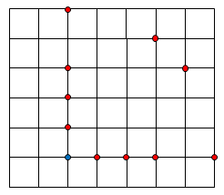

Alice walks on a lattice grid. She can step from one lattice point $A (a,b)$ to another $B (a+x,b+y)$ providing distance $AB = \sqrt{x^2+y^2}$ is a Fibonacci number $\{1,2,3,5,8,13,\ldots\}$ and $x\ge 0,$ $y\ge 0$.
In the lattice grid below Alice can step from the blue point to any of the red points.

Let $F(W,H)$ be the number of paths Alice can take from $(0,0)$ to $(W,H)$.
You are given $F(3,4) = 278$ and $F(10,10) = 215846462$.
Find $F(10\,000,10\,000) \bmod 1\,000\,000\,007$.
solve(W=3, H=4) → ?solve(W=10000, H=10000) → ?